Session 309 · review page · Metric and the arrow
Three live pages moved from the stat card to Metric this morning. The arrow now takes the red and green inks in all four themes. It is also a thin line arrow now, where it used to be a filled triangle. That is the main thing to look at.
01 · Metric, with and without the trend
The KPI tile and the stat card are now one block, Metric. With the trend filled, the tile is 155px tall. Without it, 103px. The arrow sits in the green ink: #137F3C in light, #66CC8D in dark.
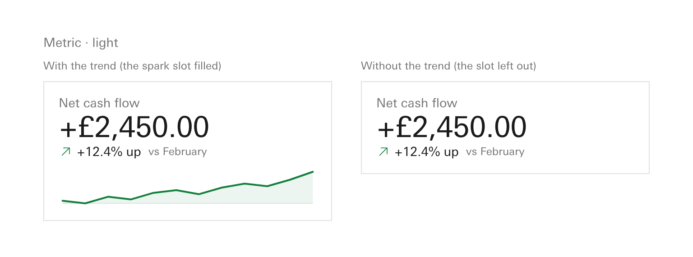
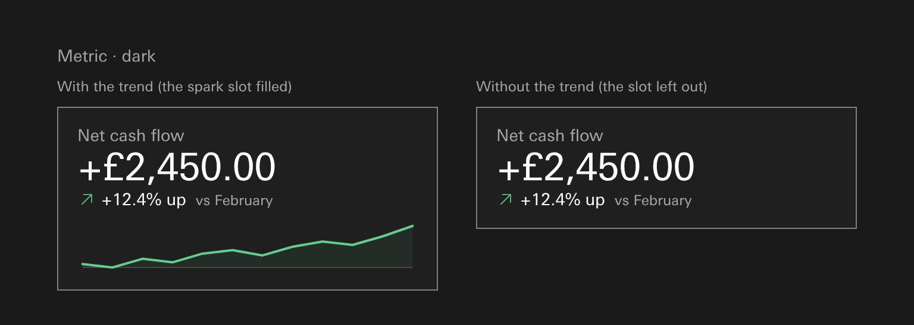
record: s308-D42 · s309-D2 · the render is lane C's page, notes/_lanes/309/C/metric-with-without-trend.html
02 · The arrow · the main call
Before, the stat card drew a filled triangle in each theme's own fill colours. After, Metric draws a thin line arrow in the red and green inks, the same in all four themes. Only light and dark differ.
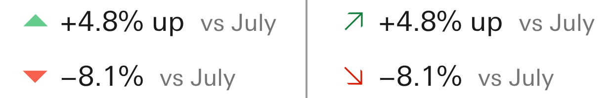
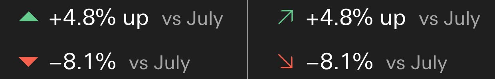
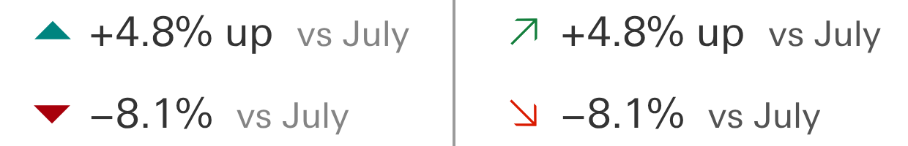
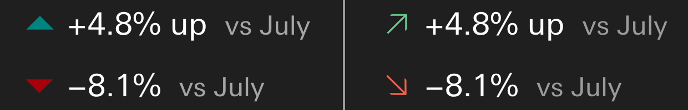
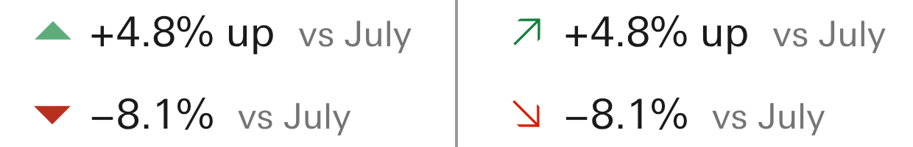
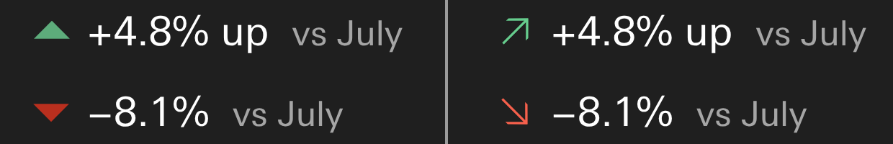
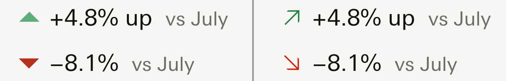
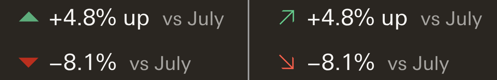
record: s309-D3 · s263-D1 · s261-D4 · s182-D3 · s151-D1 · s155-D1 · inks measured at the seat on the banking demo
Keep the thin arrow, or bring the filled triangle back?
Recommendation: keep the thin arrow in the red and green ink, because it is what your session 263 ruling set and it gives Apollo one arrow everywhere.
03 · The banking demo
The page renders in the Console theme. Its four stat tiles now use Metric. Two of them carry an arrow: Available cash, +4.8% up, and Net FX exposure, −8.1%. Click any picture to open it full size.
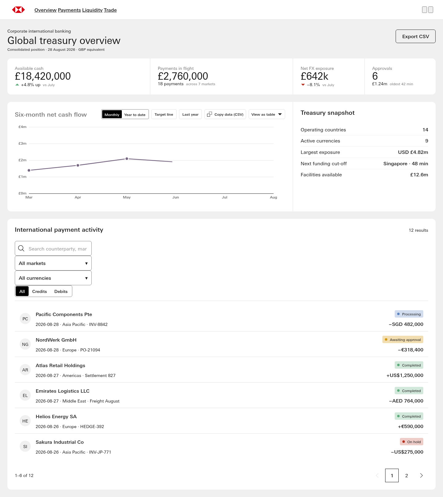
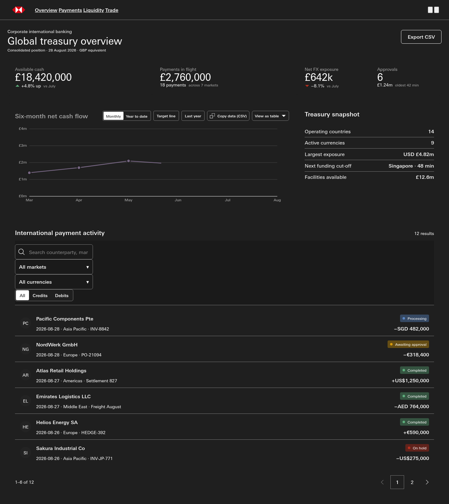
record: dashboards/international-banking-dashboard.canon.html · s309-D3
04 · The progress dashboard
These counts carry no change figure, so there is no arrow to move. With Metric's spacing, the block is 31px shorter at 1440. The numbers themselves differ only because the counts moved between the two commits.
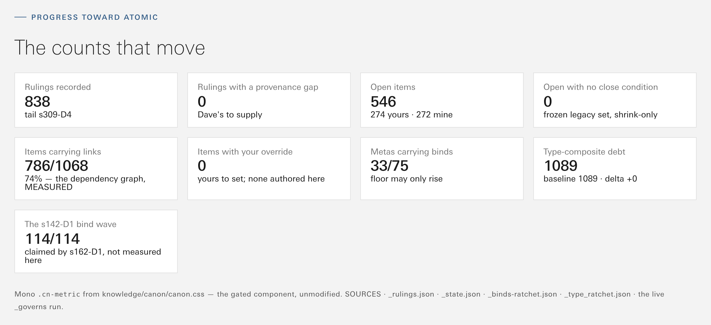
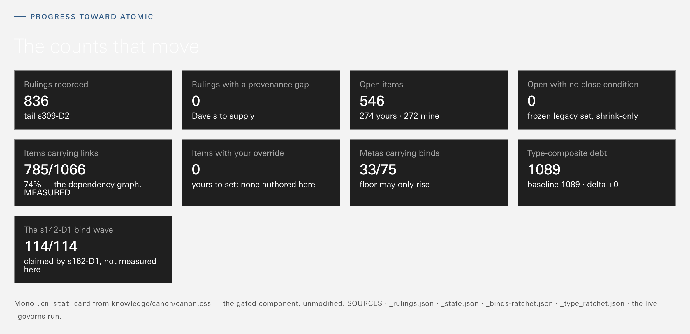
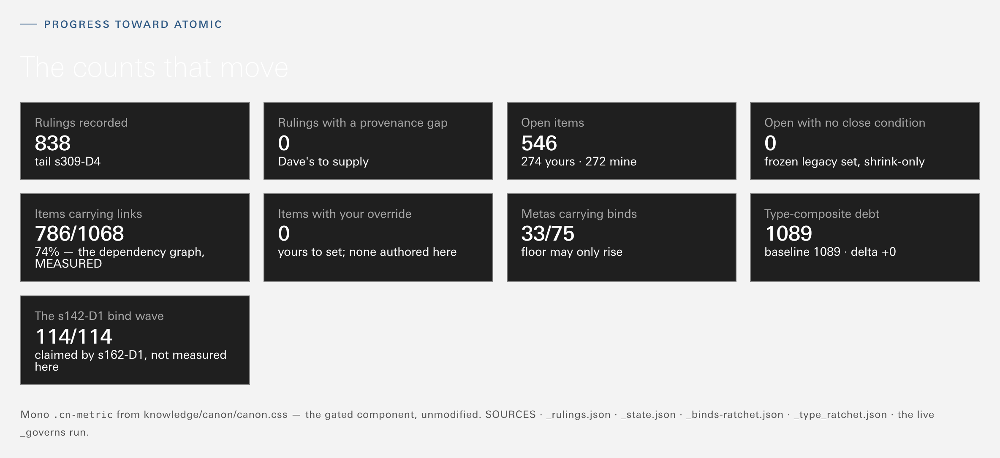
In dark mode the heading "The counts that move" is barely visible, before and after. It was already so. The move did not cause it and did not fix it.
record: dashboard/index.html · gen_dashboard.py · s309-D3
05 · The receipt page
The chart is empty after because the page was already out of date before the move. It regenerates against today's line chart, and the old stat card version regenerates to the same empty chart. Neither side draws an arrow, because a receipt copies the element but not its icons.
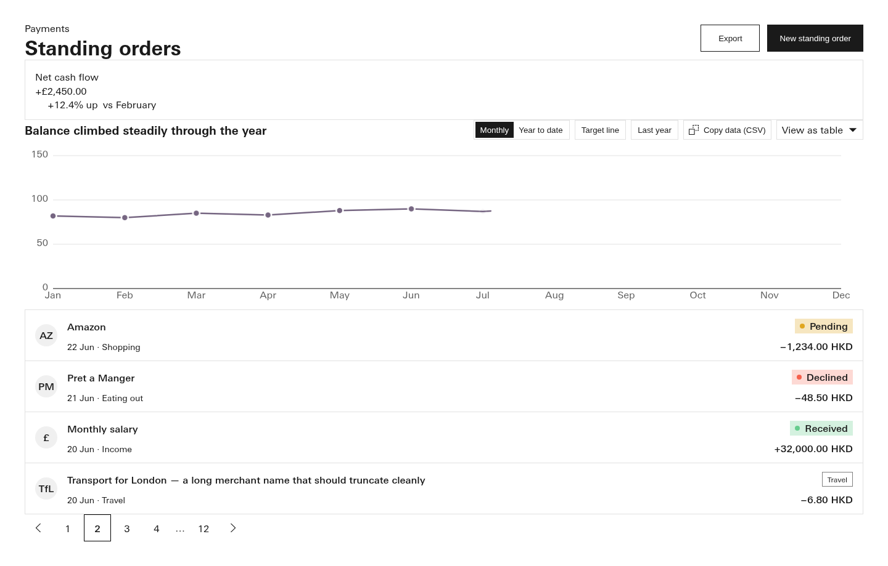
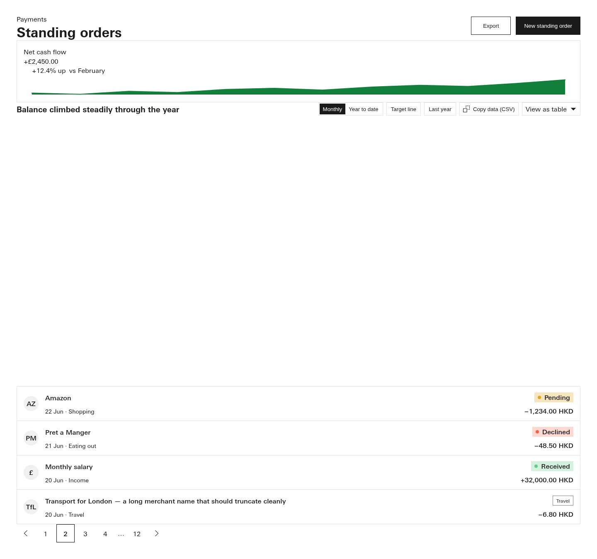
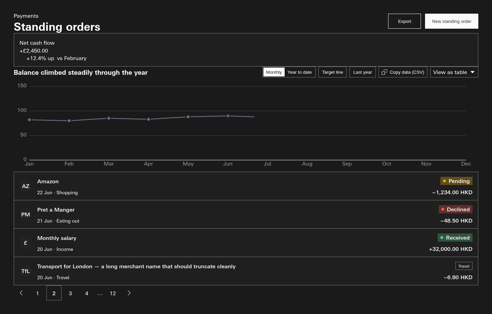
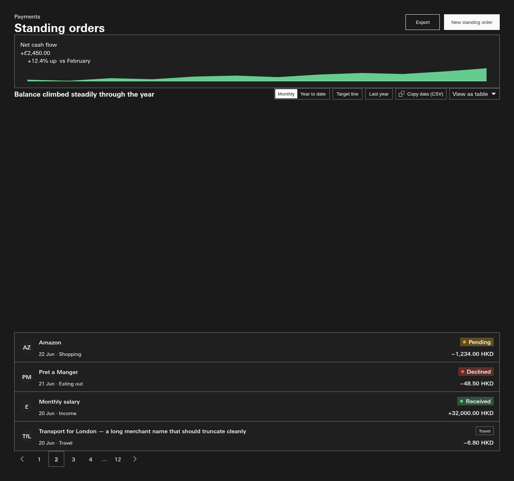
record: dashboards/international-banking-dashboard.regen-v2-receipt.html · outside every CI gate
06 · Three smaller calls
Today the colour follows direction: a rise is green and a fall is red, from earlier rulings. Nothing lets a metric say "up is bad". The live example is the banking demo's Net FX exposure, −8.1%, drawn red, though a reader might count a falling exposure as good.
record: s182-D3 · col26-016 · dv-017
Recommendation: keep direction only for now, and decide when a real page needs it.
Metric draws its no-change mark at 60% of the text colour. Its ruling says full ink, and so does Metric's own comment. None of the moved pages shows a no-change mark, so it was left as drawn.
record: s182-D3
Recommendation: full ink, as ruled.
Lane E's routine checks a throwaway copy of the repo in chunks. It takes about 7 minutes, or 12 with the contrast sweep. Lane D ran it this morning and found no reds. The proposal is to put it in the lane checklist so every lane runs it before handing back.
Recommendation: yes.
07 · Anything else
Anything else on this page
git archive b690a19b, the commit just before the move. After is the working tree at 893028e1. Both rendered at the seat with Playwright over file://, viewport 1440, with each page's own styles plus canon.css.[data-theme] element. The inks in the grid are the computed colours read from the same render. They agree with lane D's report.notes/_lanes/309/C/metric-with-without-trend.html, at 2x. The 155px and 103px heights are from lane C's report.notes/_subreports/2026-09-30-309-D-stat-card-to-metric.md and notes/_subreports/2026-09-29-309-C-metric-and-reclass.md.